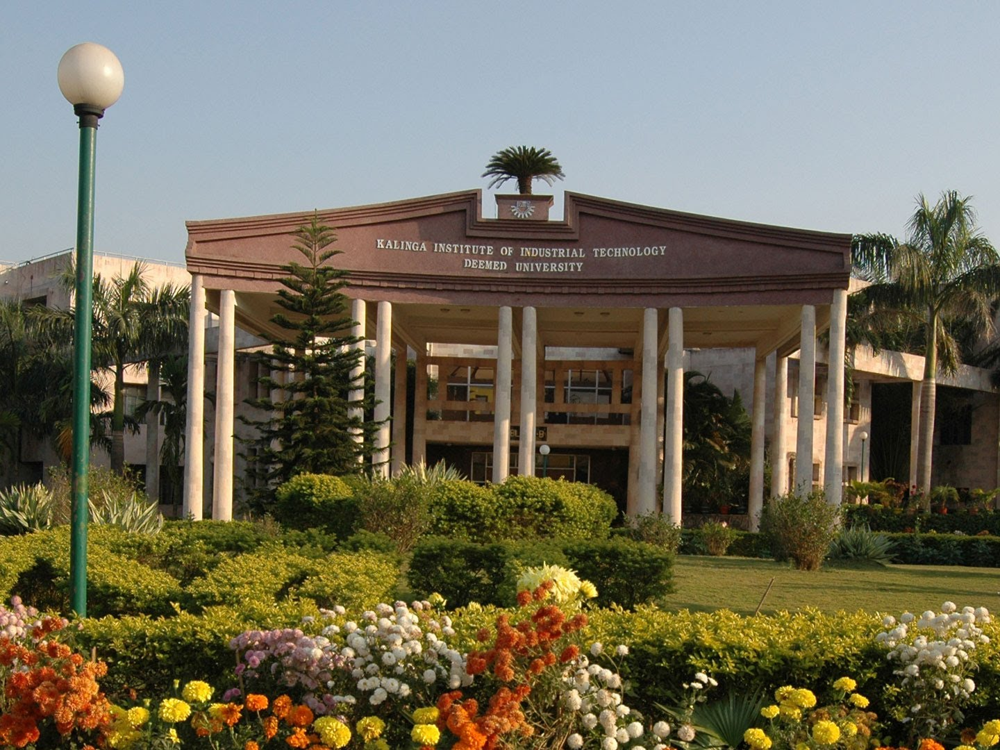

Master of Science in Computer Science THE UNIVERSITY OF TEXAS AT DALLAS Richardson, Texas

Bachelor of Technology in Electrical Engineering KALINGA INSTITUTE OF INDUSTRIAL TECHNOLOGY, Bhubaneswar, Odisha, India
About
Computer scientist and detail-oriented engineer with 4+ years’ success devising innovative and tailored solutions to meet ever-changing business requirements within diverse industries and startups. Advanced skill with leading-edge software tools complemented by ability to assimilate, learn and utilize emerging technologies. Solid mathematical knowledge and computer science foundation with experience developing algorithms and data-processing & analysis logic
Designed and developed core software applications from scratch in diverse industries working individually and in team.
Led a Quality Assurance team to ensure product development standards and SDLC process compliance.
Resided and worked in 8 different cities around the world, each having diverse culture and different first language.
Projects
Data Structures and Algorithm Analysis
Completed projects involving Generics, Lists, Strings, Trees, Hashing, Sorting, Queues, Heaps, Graphs and their implementation on very large inputs (>1million). Implemented and Optimized running times for algorithms like Prims, Hierholzers, Dijkstras, Bellman-Fords, KMP, Kruskals on very large data sets.
Completed long projects on multi-dimensional search, Arithmetic of very big integers by creating own data structures models using existing data structures in Java libraries.
Big Data
Completed Projects on Hadoop/Map-Reduce, PIG Latin, Scala, Spark, and Kafka for Data processing and predictive analysis.
Machine Learning
Worked in a team and designed a recommender system on Bosch production line data by coding a classifier algorithm on Python
Database management system
Completed a project to design, implement and present a Database with phases including Requirement analysis, ER diagram, relational schema, functional dependencies, normalization and SQL statements and procedures.
Operating System
Completed operating system projects involving multi-threading using server-client model, semaphores and sockets